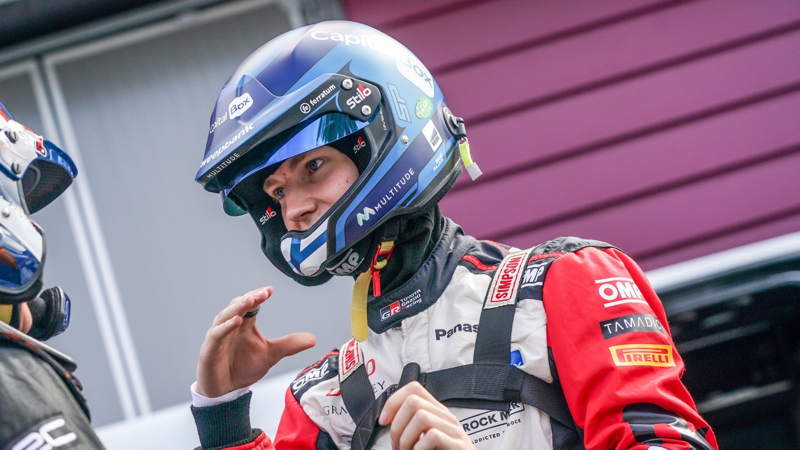

назад
назад
Возвращение финна: Паяри возвращается в Rally1 на два этапа
11.09.2024После впечатляющего дебюта на высшем уровне в начале этого сезона Сами Паяри еще дважды выступит за рулем Toyota GR Yaris Rally1 HYBRID. Toyota GAZOO Racing подтвердила, что Паяри под управлением Энни Мялкёнена примет участие в Ралли Чили Био Био (26 - 29 сентября) и в Ралли Центральной Европы (17 - 20 октября). В Чили 22-летний финн заменит Такамото Кацуту, а в Центрально-Европейском раунде примут участие оба гонщика. Паяри перешел в Rally1 после ряда сильных выступлений на GR Yaris в модификации Rally2 в WRC2 в этом сезоне. Он привлек к себе внимание, выступив на Secto Rally Finland, где одержал победу на этапе и занял впечатляющее пятое место в общем зачете. Его участие в Центрально-Европейском ралли было организовано в сотрудничестве с WRC Promoter в рамках усилий по поддержке проверенных талантов из категорий поддержки, чтобы сделать последний шаг в высший класс. «Удивительно, что у нас появился шанс сесть за руль GR Yaris Rally1 HYBRID еще на двух этапах этого сезона, - сказал Паяри. Очень приятно осознавать, что TGR-WRT оказывает мне такое доверие».
